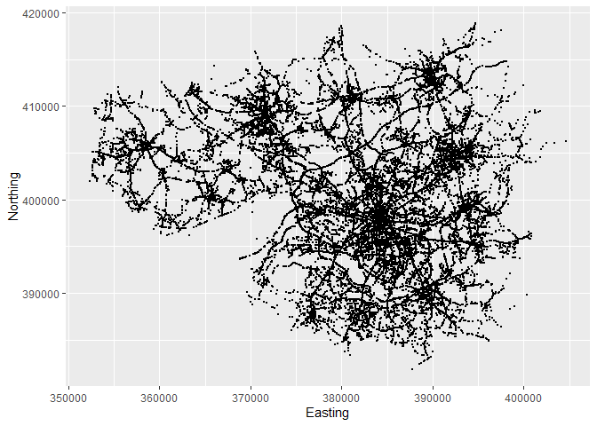
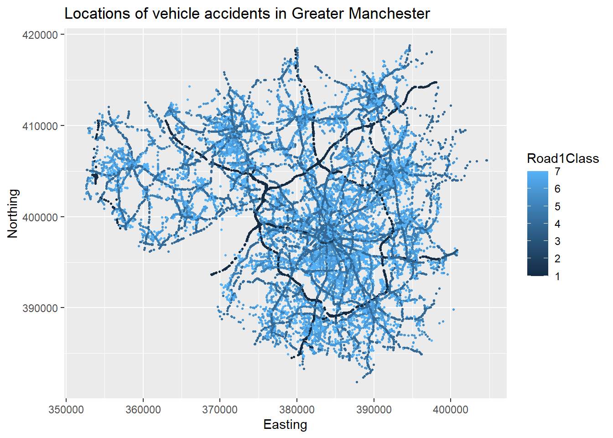

Learning Outcomes
This document is for you to experience some very basic functionality in R/RStudio.
In particular this is for you
- to explore the RStudio interface
- to learn how to search for help
- to not be scared by error messages
- to know how to load libraries
- to upload a datafile
- to explore the contents of this datafile
- to learn what functions do
- to learn about data types
- to undertake some basic data manipulation
This Data Lab assumes that you have R and RStudio installed on your computer. Alternatively you can get yourself an RStudio/Posit Cloud account (https://posit.cloud/). The free account is sufficient to get started. But in the end you should attempt to have RStudio up and running on your computer.
Prepare your Workspace
Before you start you should create a space (i.e. a folder) on your computer from where you are planning to do all your R work. Make sure you understand where that folder is and that you know the path to that folder.
Let’s say you named your folder Rwork on your C drive,
then the path to your folder will be C:\Rwork.
For this computer lab we are using the datafile STATS19_GM_AccData.csv. You should download this datafile into the folder you just created and want to work from. It will also be useful to have the Data Dictionary ready.
Exploring RStudio and searching
RStudio is a software which makes working with the actual statistical software R easier. In fact, once you followed the installation advice and have R and RStudio installed, you will never really have to worry about R anymore. Just start RStudio.
When you load RStudio for the first time you should see something like this.

There are two important areas on that screen, the Console and the Environment. The Console is something like your main computational area. In there you can see some information but at the end an “>”. This indicates that RStudio is standing ready to do whatever you want it to do.
Say you want to calculate 3+4 … yes, trivial but let’s start small. Type 3+4 into the console (behind the “>” sign) and press enter. Yes you should see the correct result.
3+4## [1] 7That was easy, let’s see whether you can get R to calculate \(13^2\), \(\sqrt{7569}\), \(e^{5}\) and \(ln(5)\). The first you achieve as follows:
13^2## [1] 169What about the others. Well, at this stage we will introduce you to two of the most inportant programming techniques there are:
- Just try it. Do you have a hunch how to do it? Test it. I am yet to hear that someone broke their computer by entering an incorrect command in RStudio.
- searching on the Web (say in Google, Bing, Baidu or DuckDuckGo)! For instance if you want to know how to calculate a square root in R you may want to search for “how to calculate a square root in R” and you should find the appropriate advice. Practice your search technique to calculate the above solutions. Check against your calculator.
Functions
Functions are important building blocks of any programming language. You just used your first function. Hopefully you found out that the way to calculate \(\sqrt{7569}\) was to type
sqrt(7569)## [1] 87Giving you the result 87. What you used here is a function, namely
the sqrt function which some clever programmer wrote in
order to calculate a square root. The anatomy of a function is
function_name(input). Think of a function as a drink
machine.

Most functions require some input. Our function, the
sqrt function needs a number of which to take the square
root. The output in our example, 87, is then returned. In our case it is
returned to be printed in the Console window.
Creating variables
So far you have learned that R can be used as a glorified calculator. Let’s start to explore why R is way more powerful that that. You can save the results of as many calculations as you want and you can easily reuse the results of some calculations in later calculations.
Type “a<-12/4” into the console (without the quotation marks) and press enter
a <- 12/4You will see that in the console the correct result does not show, but in the Environment pane of your RStudio window you should now see an entry

What did the command “a<-12/4” actually do? In words: “Calculate
12/4 and assign (<-) the result to a variable called
a.”
With that in mind implement the following: “Calculate 11*11 and
assign (<-) the result to a variable called A.”
You should now see two variables in your Environment pane. Let’s add
another: “Calculate the square root of 64 and assign (<-) the result
to a variable called b.”
Note that we used the sqrt function again, but this time
the output was not send to be printed in the Console, but instead it was
send to the new variable b. If you have done everything
right your Environment panel should now look as follows

Note that a and A are different variables,
so R is case-sensitive! All the variables listed in the Environment can
be re-used for further calculations. For example:
d <- A - a + 2*bLet’s perform another calculation in which we use the result of the last calculation:
e <- D - 3*a## Error in D - 3 * a: non-numeric argument to binary operatorYou will see R throwing an error message at you: “Error in D - 3 * a
: non-numeric argument to binary operator”. Ehmmm … what does this mean?
Actually not a lot. In the first instance this tells you that something
went wrong in that command. Can you see what the problem is? Remember R
is trying to perform the calculation to the right of <-
and then assign this to a new variable e. Does it have all
the info on the right hand side? Check your list of variables in the
Environment panel. Recall that R is case sensitive.
An important lesson with respect to error messages
- You will see them ALL THE TIME, and that is fine
- You cannot break the computer with any errors in R, so don’t worry, just try.
- Re-read what you typed, is it actually what you wanted to do.
- Read the error message. Sometimes it will give you a clue as to what the problem is … unfortunately not here!
So, we have done a bit of work so far. Let’s take a short break. Please close RStudio and click “Don’t Save” when you get the message in the next image.

Get up, stretch your legs and get yourself a glass to drink. Then come back and open RStudio again so that we can continue our work.
As you open you should get exactly the same initial layout as before
… What value did e have again???? (125 if you managed to
correct the above error) Where are our calculations??? Unless you worked
in a script file, all your work is gone now. The next section is to
teach you the right workflow such that this does not happen with your
important work.
Preparing your script file and libraries
For all significant work you want to make sure that you save the work you have done, such that you do not have to re-type things which you did yesterday … or just before I asked you to get a glass of water. The way to ensure that is to save all your work in a script file. A script file is basically a text file which saves all your commands (and comments - see below) and from where RStudio can easily execute these commands.
Let’s create a script file. Via the RStudio menu (FILE - NEW FILE - R SCRIPT) open a new script file and safe it in the folder from which you want to work (see above).
Start by creating a comment line at the top of that file which may say something like
# File for first SE Data Lab
# October 2023
# exciting!!!Note: Adding comments to your code is absolutely vital if you want to understand tomorrow what you did today. I am not joking, adding comments to explain to your future self what you are doing is absolutly critical. Everything which follows the
#sign is a comment and is effectively ignored by R. It is written not for R but for your future self!
If not mentioned otherwise all the following code should be added to that script file and executed from there. Save that file and make sure you know where you save it as, next week, you may want to continue to work on this.
Next, you should ensure that you set the working directory to the
directory where your scriptfile and datafile is in. If your folder was
C:\Rwork then the command below should read
setwd("C:/Rwork"). Note that all backward slashes
(\) have to be replaced by forward slashes
(/). Don’t ask why, just accept ;-).
setwd("XXXX:/XXXX") # replace the XXXX with your drive and pathNote; If you are having trouble finding the location of your script file, or how to formally write it down, this is a trick. In the menu to RStudio click on teh following: “Session” - “Set Working Directory” - “To Source File Location”. RStudio will find the path to your script and will execute the command. You can then copy the command from the console into your script such that you have it saved for next time.
Load the libraries which we want to use.
library(tidyverse) # for almost all data handling tasks
library(ggplot2) # to produce nice graphiscsNote: Libraries are collections of functions which add great functionality. They are not included in the base R installation and hence need to be added to your computer (see installation advice for packages below - this only has to be done once on each computer). However, even once they are installed on you need to make this new functionality available to your code. This is what the
libraryfunctions do. This has to be done at the beginning of every script file in which you want to use the respective functionality.
By just typing these commands into the script file nothing is actually happening. If you want R to execute any of the commands in your script file you have to do one of the following:

- Press the “Source” button, in which case R will execute all commands in the script file
- Press the “Run” button, in which case R will run the command in which the curser currently is
- Press the “CTRL”+“ENTER” on the keyboard (COMMAND + ENTER on a mac), in which case R will run the command in which the curser currently is
- Highlight several lines and press “CTRL”+“ENTER” on the keyboard (COMMAND + ENTER on a mac), in which case R will run the commands in the highlighted lines
If RStudio tells you that one or more of these libraries are not
installed then install these (not any others) on the machine you are
working from. For instance, if ggplot2 was not installed
you would receive an error message like “Error in library(ggplot2) :
there is no package called ‘ggplot2’”, and in that case you should
run:
install.packages("ggplot2")You can run this straight from the command/console or you could
instead install the package via the packages tab on the right hand side.
You will need to do this only once on your computer and once you have
done that you can call library(ggplot2) again without
running into problems.
Data Upload
Make sure you have set the working directory to the directory in
which you saved your script file and the data file (see above). As we
are dealing with data in a csv file we will use the
read.csv function to load the data. We are lucky that this
datafile has no missing data, meaning that it has no empty cells.
Missing information all appear to be coded up as a special category in
each of the variables. See the Data
Dictionary to confirm that for the RoadType variable a
9 represents “Unknown”.
accdata <- read.csv("STATS19_GM_AccData.csv")It is well possible that you receive the following error message as
you execute this command “Error: path does not exist:
‘STATS19_GM_AccData.csv’”. The most likely reason for this is that the
“STATS19_GM_AccData.csv” is not saved in your working directory. Make
sure you download that file from Blackboard and save it in the working
directory you created earlier and you used in the setwd()
command. Also make sure that the file name used in the command here
matches exactly the file name in your folder.
Make sure that your data upload is successful. You should see an
object accdata in your environment. You can also run the
str (structure) function.
str(accdata) # prints some basic info on variables## 'data.frame': 42624 obs. of 27 variables:
## $ Accident.Index : num 1.02e+11 1.02e+11 1.02e+11 1.07e+11 1.14e+11 ...
## $ Year : int 2010 2010 2010 2010 2010 2010 2010 2010 2010 2010 ...
## $ Severity : int 3 3 3 3 3 3 3 3 3 3 ...
## $ NumberVehicles : int 2 2 2 3 1 1 1 2 2 1 ...
## $ NumberCasualties : int 1 1 1 1 1 1 1 1 1 1 ...
## $ OutputDate : chr "01/01/2010" "01/01/2010" "01/01/2010" "01/01/2010" ...
## $ Day : int 6 6 6 6 6 6 7 7 7 7 ...
## $ OutputTime : chr "13:10" "11:10" "17:30" "13:49" ...
## $ Easting : int 382347 381892 385840 377762 355982 362380 365767 381775 383868 384681 ...
## $ Northing : int 390025 390582 403134 403302 404620 407476 405672 410735 394065 395127 ...
## $ LocalAuthority : int 102 102 102 107 114 114 100 101 102 102 ...
## $ Road1Class : int 5 7 4 4 4 5 4 5 4 6 ...
## $ Road1Number : int 5166 0 664 666 577 5239 58 6221 5103 0 ...
## $ CarriagewayType : int 3 6 3 3 6 6 6 6 3 6 ...
## $ SpeedLimit : int 50 30 30 30 30 30 30 30 40 30 ...
## $ JunctionDetail : int 6 3 3 3 0 0 3 3 6 3 ...
## $ JunctionControl : int 2 4 4 4 0 0 2 4 2 4 ...
## $ Road2Class : int 3 7 7 1 0 0 5 7 4 7 ...
## $ Road2Number : int 5103 0 0 60 0 0 5235 0 6010 0 ...
## $ PedCrossingHumanControl : int 0 0 0 0 0 0 0 0 0 0 ...
## $ PedCrossingPhysicalFacilities: int 0 0 0 0 0 0 5 0 5 0 ...
## $ LightingCondition : int 1 1 4 3 7 4 4 1 4 4 ...
## $ WeatherCondition : int 1 1 1 9 9 1 1 3 3 8 ...
## $ RoadSurface : int 4 4 2 1 1 4 4 3 2 4 ...
## $ SpecialConditions : int 0 0 0 0 0 0 0 0 0 0 ...
## $ CarriagewayHazard : int 0 0 0 0 0 0 0 0 0 0 ...
## $ PlaceReported : int 1 1 2 2 2 1 1 2 1 1 ...You should now see the accdata object in your
Environment (right hand pane).
There are 42,624 observations, each representing one recorded accident in Greater Manchester (GM) between 2010 and 2020. Each accident has variables which characterise the accident.
The following variables will be important for the analysis here:
Accident.Index, this is a unique identifier for each accidentYear, gives the year in which the accident happenedSeverity, a variable coding the severity of the accident, although we are unsure how this is codedNumberVehicles, number of vehicles involved in the accidentNumberCasualties, number of casualties involved in the accidentLightingCondition, Lighting conditions at time and location of accidentWeatherCondition, Weather conditions at time and location of accidentRoad1Class, lower numbers indicating more major roads, 1 = MotorwayRoadSurface, indicator of whether the road surface was dry wet or icy at the time and place of the accident
You wrote your first script. It is time to have another break. Make
sure you save your script and then close RStudio (you don’t need to do
that in general, but please do it at this point to help me demonstrate
the value of scripts). After relaxing for a few minutes and telling your
flatmate that you are on your way to become an expert data analyst, come
back and re-open RStudio. Load the script file (if it wasn’t loaded
automatically). The environment should, at this stage be empty, but if
you click on the “Source” button then R will automatically execute all
the commands you had in your script and accdata should be
available in the Environment panel.
So that is the value of scripts! You can easily pick up where you left your work, no need to redo anything.
Accessing data
The accdata item in your environment basically contains
the entire spreadsheet of data. You can look at the entire spreadsheet
by clicking on the tiny spreadsheet in the accdata line.
This will open a new tab with the spreadsheet. Have a look and then
close the tab again.
It is important to know how you can access subsets of data. Run through the following commands to see what happens. Perhaps also experiment a bit by changing the commands and predicting what the outcome should be.
accdata[1,]
accdata[,2]
accdata[3,4]
accdata[,4:6]
accdata[4:6]
accdata[2:4,5:10]
accdata$SpeedLimit
accdata$SpeedLimit[1:5]
accdata[c("SpeedLimit","Road1Class")]These are all different ways to select particular observations (rows in a spreadsheet) and variables (columns in a spreadsheet). There were two particular techniques which are important
accdata$SpeedLimitdid address theSpeedLimitvariable in theaccdatadataset (DATASET$VARIABLE).c("SpeedLimit","Road1Class")allowed us to access two very particular variables, ignoring all other 25 variables. It is useful to know whatc("SpeedLimit","Road1Class")actually does.
c("SpeedLimit","Road1Class")## [1] "SpeedLimit" "Road1Class"It creates a list with two elements, here two text strings. But you can also create lists with numbers.
c(3.5,2/3)## [1] 3.50 0.67In fact you could even create lists which mixed datatypes.
c("Countries in the EU", 28-1, ":-(")## [1] "Countries in the EU" "27" ":-("Lists are quite fundamental to the way how R stores data. If you assigned any of the above to a variable, for instance
silly_list <- c("Countries in the EU", 28-1, ":-(")you would have saved it in the Environment and could re-use it.
All the commands in this section were really only to explore the
functionality of R. There is no need to save these in your script file.
But no harm either as none of these actually changed the values of the
data in accdata.
Do not change your original data sheet (here the csv file)
An important principle of working with data here is that you should
never change your original datafile, which in this case the
STATS19_GM_AccData.csv file. As you can see from our work
so far we merely upload the csv file and then use the data here in R,
but we will not go back to the original csv file and change anything in
there. And that is very important. In that way you can always start
again with your analysis from your original data.
If you were to make any changes in your csv file, these changes would be irreversible.
Investigate Data 1
Let’s find out how the severity of an accident is coded like. If you wish to find out what different values the variable takes in your dataset you can easily see that with:
unique(accdata$Severity)## [1] 3 2 1But what do the values 1, 2 or 3 represent?
The usual advice would be to go to the data dictionary and check the coding, but all we can see on the data entry form is the following
But does a 1 in the Severity variable indicate a fatal
or a slight accident. We will have to check from the data itself. I am
sure you could come up with different ways of checking.
Presumably there will be mostly slight accidents and very few fatal ones. So if we look up the number of accidents in each category it seems reasonable to assume that the category with the largest number of observations is the slight one.
The easiest way to look at this is to use the table
function on the Severity variable
table(accdata$Severity)##
## 1 2 3
## 582 6519 35523Judging from here it is apparent that category 1 is likely to be the severe accident category and category 3 the slight one.
Data Formats
We can see (from the output to str(accdata)) that almost
all variables are integer (int) variables, i.e. the
software will treat them as whole numbers. Only the date and time
variables are text (character, chr) variables and the
AAcidentIndex is a num variable. Also numeric
but not restricted to whole numbers like int.
Recall that for most of the variables the numbers actually represent
categories. Like for the Severity variable where we
previously established that 1 = fatal, 2 = serious and 3 = slight. For
later it will be convenient to have Severity coded as a
variable which is not numeric, but a categorical variables. In other
words a variable which recognises that there are only limited possible
outcomes (here 3).
In R such variables are called factor variables. Hence
we will create a new variables, Severityf which contains
the same info, but just in a way easier to understand.
accdata$Severityf <- as.factor(accdata$Severity) # translates a variable into a factor variable
levels(accdata$Severityf) <- c("Fatal","Serious","Slight") # changes the names of the categories
table(accdata$Severityf)##
## Fatal Serious Slight
## 582 6519 35523There are a number of important elements in these lines
accdata$Severityf <-creates a new variable in theaccdataobject, calledSeverityf.<-is called the assignment operator and it assigns some value to that new variable. It will assign whatever comes to the right hand side of<-as.factor()is a function calledas.factor. If you want to find out what a function does you can call the help function?as.factor. This one creates a variable as a factor (categorical) variable. But it requires an input (Whatever comes inside the parenthesis). Here we ask R to use the variableaccdata$Severityto create a new factor variable (Severityitself is anintvariable).levels(accdata$Severityf) <- c("Fatal","Serious","Slight")then changes the names of the levels (categories) into sensible names. Here we use again the assignment operator<-. The order matters, but we learn from the earlier analysis that: 1 = fatal, 2 = serious and 3 = slight. AsSeverityis a numerical (int) variable it will order the categories in numerical order, 1 first and 3 last. In doubt you will have to check that you have used the right ordering by comparing theSeverityandSeverityfvariable.
Now create two new variables WeatherConditionf and
RoadSurfacef which achieve the same for the
WeatherCondition and RoadSurface variables.
Replace the XXXX to make this code work. You will have to
check the data dictionary for the right ordering. The general structure
of the lines will be:
accdata$XXXX <- as.factor(XXXX$XXXX)
XXXX(accdata$XXXXf) XXXX c(XXXX) And let’s also check the number of accidents in the different weather conditions and for different road surface conditions.
You did it right if you find that there were 246 accidents in “Snow, no winds” condition as well as 31 accidents on flooded roads.
Make sure you save your script file.
Investigate Data 2
We previously used the table function to characterise
the distribution of one variable. We can also use this function to
analyse the joint distribution of two variables (where we use the factor
variables we created previously).
table(accdata$WeatherConditionf,accdata$Severityf)##
## Fatal Serious Slight
## Fine, no winds 458 5232 26845
## Rain, no winds 67 786 5144
## Snow, no winds 3 19 224
## Fine, winds 9 56 339
## Rain, winds 14 109 582
## Snow, winds 1 12 52
## Fog or mist 4 14 78
## Other 6 63 790
## Unknown 20 228 1469So you can see, for instance, that there were 9 fatal accidents when
the weather was fine with winds. It is often more instructive to look at
proportions rather than numbers. That is easily achieved by wrapping the
above line of code into the prop.table function.
prop.table(table(accdata$WeatherConditionf,accdata$Severityf))##
## Fatal Serious Slight
## Fine, no winds 1.1e-02 1.2e-01 6.3e-01
## Rain, no winds 1.6e-03 1.8e-02 1.2e-01
## Snow, no winds 7.0e-05 4.5e-04 5.3e-03
## Fine, winds 2.1e-04 1.3e-03 8.0e-03
## Rain, winds 3.3e-04 2.6e-03 1.4e-02
## Snow, winds 2.3e-05 2.8e-04 1.2e-03
## Fog or mist 9.4e-05 3.3e-04 1.8e-03
## Other 1.4e-04 1.5e-03 1.9e-02
## Unknown 4.7e-04 5.3e-03 3.4e-02Clearly this looks just a little too messy with the long numbers. You can control in which format R outputs numbers
options(digits = 2, scipen = 10) # use ?options to understand what it does or just
# experiment with different valuesLet’s re-run the same line of code.
prop.table(table(accdata$WeatherConditionf,accdata$Severity))##
## 1 2 3
## Fine, no winds 0.010745 0.122748 0.629809
## Rain, no winds 0.001572 0.018440 0.120683
## Snow, no winds 0.000070 0.000446 0.005255
## Fine, winds 0.000211 0.001314 0.007953
## Rain, winds 0.000328 0.002557 0.013654
## Snow, winds 0.000023 0.000282 0.001220
## Fog or mist 0.000094 0.000328 0.001830
## Other 0.000141 0.001478 0.018534
## Unknown 0.000469 0.005349 0.034464You can now see that 63% of all accidents are slight accidents which happen in fine weather with no winds. If you add up all these proportions you will get 1.
This is still only moderatly insightful. Let’s try the following:
prop.table(table(accdata$WeatherConditionf,accdata$Severity),2)##
## 1 2 3
## Fine, no winds 0.7869 0.8026 0.7557
## Rain, no winds 0.1151 0.1206 0.1448
## Snow, no winds 0.0052 0.0029 0.0063
## Fine, winds 0.0155 0.0086 0.0095
## Rain, winds 0.0241 0.0167 0.0164
## Snow, winds 0.0017 0.0018 0.0015
## Fog or mist 0.0069 0.0021 0.0022
## Other 0.0103 0.0097 0.0222
## Unknown 0.0344 0.0350 0.0414You can now see that the proportions are calculated conditionally on
the severity of the accident. This is achieved by adding the “2” as an
optional input into the prop.table function. This tells the
function to calculate proportions conditional on the values in the 2nd
dimension (which are the columns).
Check what happens if you change the “2” to a “1”.
prop.table(table(accdata$WeatherConditionf,accdata$Severity),1)##
## 1 2 3
## Fine, no winds 0.014 0.161 0.825
## Rain, no winds 0.011 0.131 0.858
## Snow, no winds 0.012 0.077 0.911
## Fine, winds 0.022 0.139 0.839
## Rain, winds 0.020 0.155 0.826
## Snow, winds 0.015 0.185 0.800
## Fog or mist 0.042 0.146 0.812
## Other 0.007 0.073 0.920
## Unknown 0.012 0.133 0.856Does there seem to be any relation between the weather conditions and the severity of the accident?
If you are looking at categorical variables only then looking at tables of frequencies or proportions, as above, is the right way to go. However, when you are interested in outcomes of variables which are truly numerical, meaning that the actual number has a meaning (like the number of vehicles and casualties involved), then looking at numbers of frequencies may not be the best way to look at the variables. It may make sense to look at some summary statistics like, means, medians and standard deviations.
A Simple Plot Tells a Lot
Here we are using the extremely powerful ggplot
function. This is not here to actually teach you how this works, but
just to wet your appetite.
ggplot(accdata, aes(x = Easting, y=Northing)) + geom_point(size=0.5)
You can basically see where in Manchester accidents happened. In essence you can see the Manchester Road network. The next image adds a few flourishes to the picture.
ggplot(accdata, aes(x = Easting, y=Northing,color = Road1Class)) +
geom_point(size=0.5) +
ggtitle("Locations of vehicle accidents in Greater Manchester")
End of session
Before you leave RStudio you need to save your script file. That means that tomorrow you can just come back open the script file and continue to work.